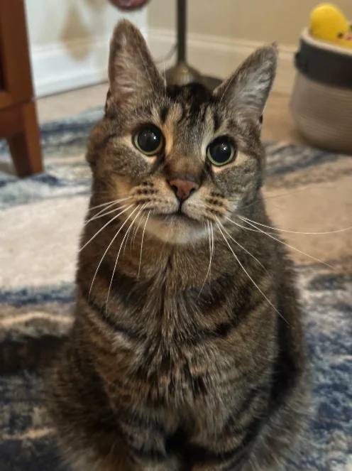
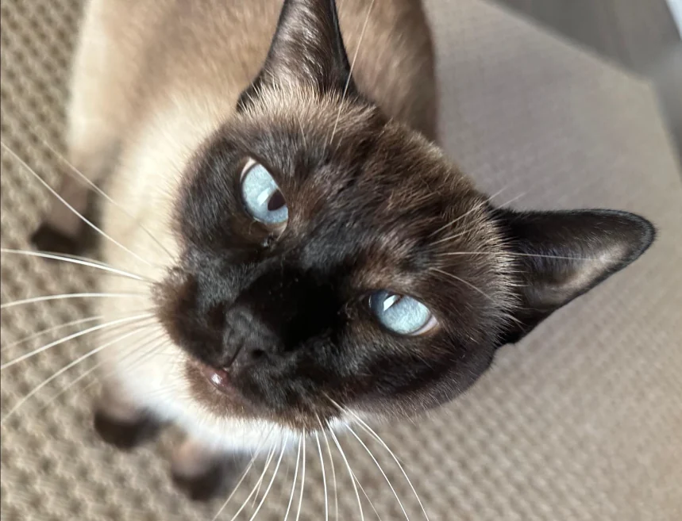

Your cat stays safe and comfortable at home while our professional pet-care team handles their routine, companionship and daily needs. You'll receive photos and a detailed update after every visit.


Most cats are calmer staying where everything already smells, sounds and feels familiar. No carrier, no car ride, no unfamiliar boarding room — just their own windows, their own furniture and their own schedule.
Hiring a cat sitter in Sarasota should get you more than someone stopping by to top up a bowl. A Wiggle Your Tail visit is professional in-home care: your cat is looked after by a bonded and insured pet-care professional who works to written instructions, checks on how your cat is doing, and reports back to you afterwards.
Every visit is built around the individual cat: their feeding schedule, their personality, how much play and company they want, and any care instructions you leave with us. A confident cat who greets the sitter at the door and a nervous cat who watches from the top of the stairs get very different visits — by design.
Visits run 30, 45 or 60 minutes. What happens inside that time is set by you at the Meet & Greet — here's what a typical cat visit covers.
Kittens, adults and senior cats, single-cat homes and multi-cat households all get the same approach: the routine you already use, followed the way you use it. Need the house looked after as well — mail, packages, plants and regular home checks? That's covered by our snowbird & house sitting service, which can run alongside your cat visits.
Cats are territorial by nature. Moving one to an unfamiliar building for a week asks them to give up every routine at once — and most of them don't take it well.
A cat sitter has keys to your house. These are the checks and credentials behind the people who hold them.
"Christa is gentle, kind and considerate with your furbaby. If you want a quality caregiver, I would strongly recommend Wiggle Your Tail Pet Care. 4 paws up!"
Every new client starts with a free Meet & Greet — no commitment, no obligation.
Professional in-home cat-sitting visits start at $40. Cats are cared for under our standard in-home visit rates — there's no separate cat-only pricing tier.
Holiday surcharges apply on major holidays, and additional fees apply for locations outside our standard service areas. See full pricing for every visit length, additional-pet fee and service, or compare it with our general pet sitting and overnight care.
We cover Sarasota and the surrounding coastal and inland communities — from downtown condos to the keys and the neighbourhoods out toward Lakewood Ranch.
The practical differences matter for cat visits. A downtown or Gulf Gate home is a quick, easy stop to fit into a twice-daily schedule. Siesta Key and Longboat Key mean bridge and season traffic, which we plan around so meal times stay consistent. Seasonal residents heading north often pair cat visits with home checks for the months they're away.
Availability and any travel fees depend on your specific address — send it over and we'll confirm both before you book.
Check availability at your address →Please note there are additional fees for locations outside of our standard service areas.
Still have questions about finding a professional cat sitter near you? Call or text us at (941) 280-5156.
Book a Free Meet & GreetGive your cat professional care without taking them away from the home and routine they know. Not sure which service fits? Compare our full range of in-home pet sitting and overnight care →